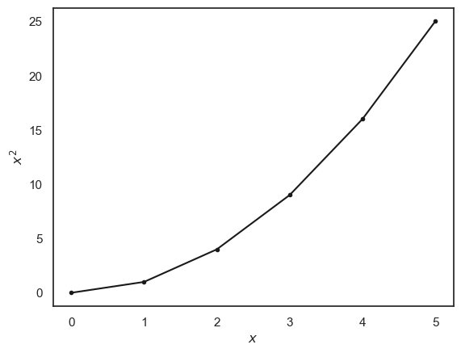

1.5. The FOR loop#
Remember, there’s no way you can actually “break” anything, so don’t be afraid to edit things within this notebook. Errors are not necessarily a bad thing (even if they do look scary), have a go at working through some of the examples below. Today is not about understanding all of the specifics or the exact code you will be confronted with, but rather its important to try things out before the course starts so we can be sure you have a working set up for next week
What is a For loop?
Sometimes in coding, you want the computer to do the same task many times — for example, go through every row in a dataset, or repeat a calculation for each participant. Instead of writing the same instruction over and over, we can use a for loop.
A for loop tells the computer: “For each item in this list (or for each number in this range), do the following steps.” It’s like giving a set of instructions once, and then letting the computer automatically repeat them as many times as needed. Please work your way through the following notebook, by reading the instructions (written in markdown cells) and executing the code. Sometimes the instructions might tell you to change small things, or test your conceptual understanding.
1.5.1. Set up Python libraries#
As usual, run the code cell below to import the relevant Python libraries
# Set-up Python libraries - you need to run this but you don't need to change it
import numpy as np
import matplotlib.pyplot as plt
import scipy.stats as stats
import pandas as pd
import seaborn as sns
sns.set_theme(style='white')
import statsmodels.api as sm
import statsmodels.formula.api as smf
import warnings
warnings.simplefilter('ignore', category=FutureWarning)
1.5.2. My first loop#
Say we want the computer to repeat a task a few times - in this case, the task is to say “hello” three times. One way to do this might be to write the same command out 3 times. For example run the code below to see if we can achieve our goal
print("hello!")
print("hello!")
print("hello!")
hello!
hello!
hello!
Although this worked well, you can imagine how difficult this might become if we want to extend this example to 10, 20, or even 1000 iterations. Instead of repeating code, we can get the computer to do this using a for loop. The for loop will execute any command within, for as many times as you tell it to.
The
forloop is controlled by a counter variable in our case we are using a variable called i, but the name of this variable doesn’t really matter.i counts how many times we have been round the loop (in this case, how many times we have said “hello”).
When we have repeated the loop the required number of times, we stop
Execute the code below and see if you get the same output
for i in [0,1,2]:
print("hello!")
hello!
hello!
hello!
1.5.3. Comprehension questions#
a. See if you can change the code above to say “hello” four times
Setting the number of iterations#
The number of iterations is the number of times we want to go round the loop. This is why i is a common variale name for the iterations.
Imagine if we wanted to run the loop 100 times, it would be a bit annoying to write out all the values of i we want to use
for i in [0,1,2,3,4,5,6 ......... 100]
luckily we can generate this list automatically using the function range()
for example:
for i in range(5)
has the same effect as
for i in [0,1,2,3,4]
let’s try it!
Note: In Python, functions – like range() are always followed by parentheses (). Sometimes the parentheses contain inputs (also called arguments), and sometimes they are left empty. Variable names, on the other hand, are not followed by parentheses. It’s important to type function names exactly (no typos!), because Python only recognizes them when spelled correctly. Variable names, however, are ones you create yourself. You can call them almost anything you like. As you continue, see if you can spot some other functions.
for i in range(5):
print("hello!")
hello!
hello!
hello!
hello!
hello!
1.5.4. Changing the input on each iteration#
Our counter variable i can also be used to count through a list of inputs, which might be useful if you want to repeat the same action for every item in a list. Say for example, if you wanted to use Python to greet a set of friends.
lists in Python are just like lists elsewhere, they are an ordered collection of items (names, numbers, or measurements). In Python they are grouped together inside square brackets []. Below we will define a list called friends (this is a variable name you can call this list whatever you want).
If you want to access any particular member of the list you would just use the name of the list with a square bracket and the index of the item you want to access. For example below we will print out the first item on the list of friends.
Comprehension Question#
a. How can I print the second name on the list?
friends = ['Alan','Beth','Craig']
print(friends[0])
Alan
Now that we have a list of friends defined we can again use a for loop to personally greet each member of the list.
Here’s How:
Previously we created a list of friends which stores three names.
The loop for i in range(3): means: start i at 0, then 1, then 2. (remember python always counts starting from 0)
On each pass through the loop, Python looks up the name at that position in the list
friends[i]and uses it in the print statement.
for i in range(3):
print("Hello " + friends[i] + "!")
Hello Alan!
Hello Beth!
Hello Craig!
Comprehension Question#
a. What would happen if I run the code block below?
Think first, and then uncomment and run the code to check!
#print(friends[4])
Automatically set number of iterations#
To avoid errors, we can automatically set the maximum value of i to match the length of our input list, using the function len(). The len() function tells us how many items are in a list. For example, if our list of friends has three names, len(friends) will return 3. (See below)
len(friends)
3
By combining this with range(), we make sure the loop runs exactly the right number of times — once for each item in the list. That way, even if the list gets longer or shorter, the loop will always adjust itself automatically.
friends = ['Alan','Beth','Craig']
for i in range(len(friends)):
print("Hello " + friends[i] + "!")
Hello Alan!
Hello Beth!
Hello Craig!
Comprehension questions#
Say I add some friends to my list:
friends = ['Alan','Beth','Craig','David','Egbert']
a. What will len(friends) be now?
b. What will happen if I run the code block below?
This about what you expect to happen first
Then uncomment and run the code block to test your hypothesis
#friends = ['Alan','Beth','Craig','David','Egbert']
#for i in range(3):
# print("Hello " + friends[i] + "!")
c. Can you fix the code block in part b so that it prints the friends list?
d. What will happen if I run the code block below?
This about what you expect to happen first
Then uncomment and run the code block to test your hypothesis
#friends = ['Alan','Beth','Craig']
#for i in range(5):
# print(str(i) + ": Hello " + friends[i] + "!")
e. Why do you think that happened? Can you fix the code block in part d?
1.5.5. Saving the output on each iteration#
Sometimes we don’t just want to print an output to the screen — we might want to save the results so we can use them again later (for example, to make a graph or do further calculations).
To do this, we need a place to collect our outputs as the loop runs. Earlier, we saw that a list in Python is an ordered collection of items, like names or numbers, written inside square brackets. Lists are very flexible, and we can add new items to them as we go.
However, in scientific work we often deal with lots of numbers, and it’s useful to have a more powerful structure designed specifically for numerical data. This is where arrays from the library numpy come in. A numpy array works like a list, but with extra features that make it faster and better for mathematical operations.
So, the general approach for saving output of a for loop to an array is:
Create an empty list or array before the loop starts (this is where we’ll store the results).
Add a new value to it during each iteration of the loop.
Use the stored results later for things like plotting or analysis.
This way, instead of just seeing outputs flash by on the screen, we actually keep them in a structured format we can work with.
Example
Before we actually save the output let’s start by making a simple loop that takes the numbers 0-5 and squares them:
Note: we’ve added some text in the print command to make things more reader friendly
x = [0,1,2,3,4,5]
for i in range(len(x)):
print(str(x[i]) + ' squared is ' + str(x[i]*x[i]))
0 squared is 0
1 squared is 1
2 squared is 4
3 squared is 9
4 squared is 16
5 squared is 25
We start by creating an arrray. Specifically, here the numbers betweens 0 and 5 are manually saved into the variable x. On each loop we call the value from position i in this array using the syntax: x[i]
Note the similarity to the syntax
friends[i]in the loop above
Comprehension questions#
a. What is x[4]
Think then check!
Don’t forget in Python we count from zero!
# print(str(x[4]))
Now instead of printing the numbers to the screen, we create an array to save them in using np.zeros():
squares = np.zeros(len(x))
print(squares)
[0. 0. 0. 0. 0. 0.]
This created an empty numpy array called squares with the same number of ‘slots’ as our input array, x. As always we can use the print() function to see what’s in the array.
We can then fill these ‘slots’ in squares one by one on each pass through the loop. We will print squares after each iteration, so you can see how the array ‘fills up’
x = [0,1,2,3,4,5]
squares = np.zeros(len(x))
for i in range(len(x)):
squares[i] = x[i]*x[i]
print(squares)
[0. 0. 0. 0. 0. 0.]
[0. 1. 0. 0. 0. 0.]
[0. 1. 4. 0. 0. 0.]
[0. 1. 4. 9. 0. 0.]
[ 0. 1. 4. 9. 16. 0.]
[ 0. 1. 4. 9. 16. 25.]
Now we have saved our output, instead of just putting it on the screen, we can do other things with it, for example plot it:
don’t worry about the syntax for plotting, this is covered in a later session
plt.plot(x,squares, 'k.-')
plt.xlabel('$x$'), plt.ylabel('$x^2$')
plt.show()

Comprehension questions#
a. When i==2, what are x[i] and squares[i]?
Think then check!
Don’t forget we count from zero in Python (goodness knows why!)
#i=2
#print(x[i])
#print(squares[i])
1.5.6. Exercise: Fibonacci Sequence#
Let’s try out our newly learned skills by making a loop to generate the Fibonacci sequence
The Fibonacci Sequence is a sequence of numbers that begins [0,1,…] and continues by adding together the two previous numbers such that
The sequence starts with
[0, 1, 1, 2, 3, 5, 8, 13..... ]
and goes on forever.
You can find some fun facts about the Fibonacci sequence here:
Your task:
Write a for loop to calculate the first 10 elements of the Fibonacci sequence.
Hints:
Start by creating an empty list.
Next add the first two values to the list
Each time through the loop, calculate the next number by adding the previous two.
Use the indexing format from above to access the values you need
Uncomment and complete the code below:
#n = 10 # number of elements to calculate
#fibonaccis = np.zeros(n)
## get the sequence started
#fibonaccis[0] = 0
#fibonaccis[1] = 1
#for i in range(2,n): # start in place 2 as we already set the first two elements of the sequence (places 0 and 1)
# fibonaccis[i] = #HERE YOU SHOULD DELETE THIS COMMENT AND INSTEAD INCLUDE YOUR OWN CODE
#print(fibonaccis)
## This bit will plot the Fibonacci sequence
#plt.plot(fibonaccis,'.-');
#plt.xlabel('$i$');
#plt.ylabel('$x_i$');